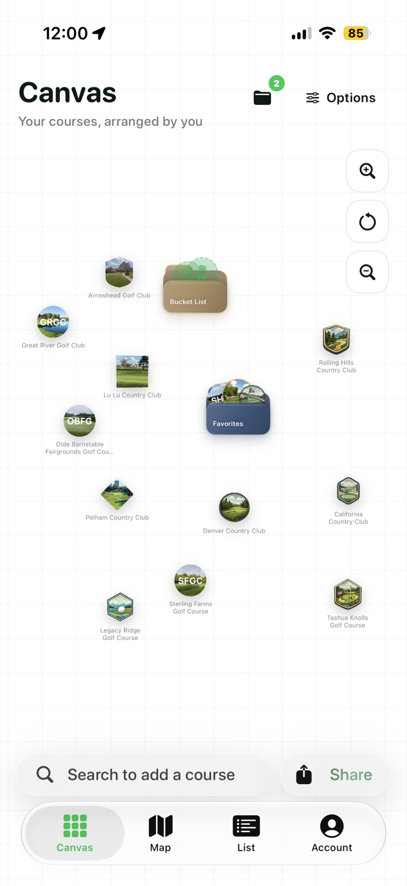
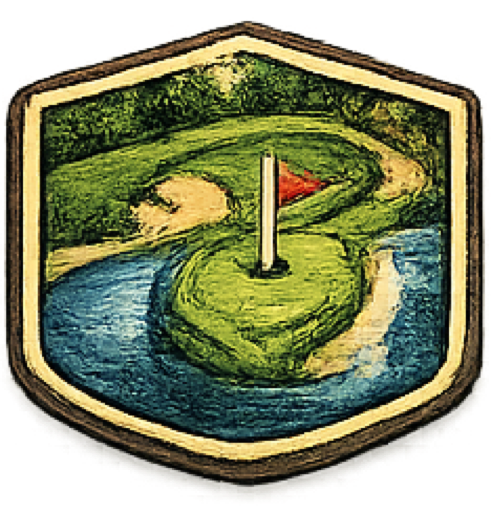
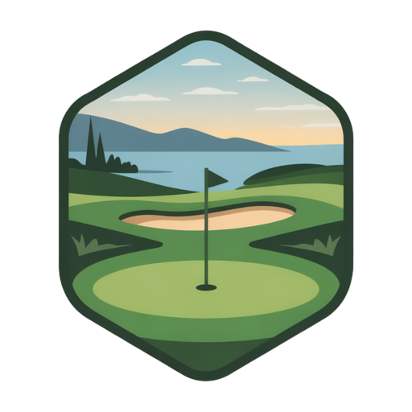
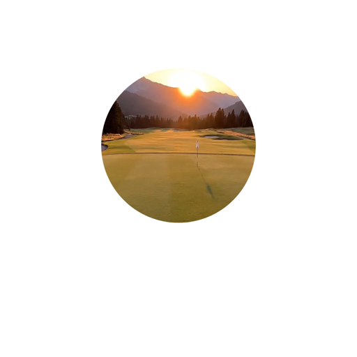

Every course is a keepsake.
Build a visual record of the places you’ve played, with course badges that make every memory feel like your own.
The courses you’ve played. The ones you dream about. Keep your golf story beautifully together with Greenskeeper.
Free on iPhone. Greenskeeper+ optional.


That first trip with friends. A new favorite close to home. Some rounds deserve more than a number.
Build a visual record of the places you’ve played, with course badges that make every memory feel like your own.
Organize your favorites and bucket-list courses on a canvas you can arrange your way. There’s always another course to discover.
See your journey on a canvas, map, or list. Share your collection and give your golf friends something new to talk about.
Every course becomes a badge with its own shape and character. Add your local favorite, make a folder for the trip you keep talking about, and watch your collection become a little more you.
Start your collection

From a PGA Tour stadium course to desert tracks routed around granite boulders — five visitor-friendly rounds in the heart of Arizona golf country.
Read the guide ↗From the Monterey Peninsula to the Oregon dunes, five courses to build a future golf trip around.
Read the guide ↗Red-rock scenery or a Golden golf day? A starting point for choosing between Arrowhead and Fossil Trace.
Read the guide ↗Greenskeeper is your golf course memory book. Track courses, collect badges, organize a personal canvas, and share your golf journey.
Greenskeeper is free to download on iPhone. Optional Greenskeeper+ features are available through an in-app purchase. See the App Store for current details.
Yes. Use your canvas and folders to organize bucket-list courses alongside your favorites.
Greenskeeper is available on the App Store for iPhone.
Give your golf journey a place to call home.
Download for iPhoneFree on iPhone. Greenskeeper+ optional.